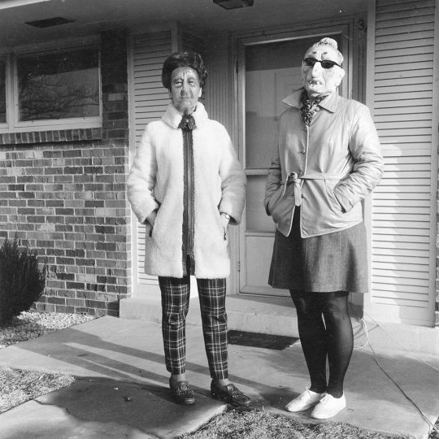
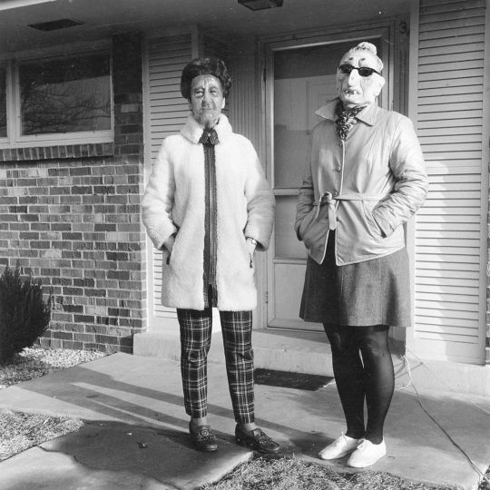

Ralph Eugene Meatyard

La photographie de Meatyard est influencée par sa passion pour la littérature et sa fascination pour le passé. Ses drames symboliques sont mis en scène dans des endroits ordinaires, souvent à l'abandon, et ont les acteurs sont la plupart du temps des membres de sa propre famille.


 
